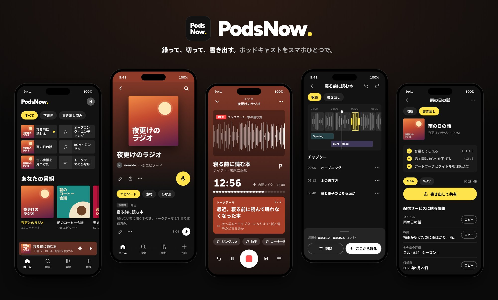

ポッズナウ
録って、切って、書き出す。ポッドキャストをスマホひとつで。
ポッドキャストの「収録 → 編集 → 音の仕上げ → 書き出し → 配信準備」を、スマートフォンだけで終わらせる収録アプリを作っています。 アカウント登録なしで、録音も編集データも端末の中に置くローカルファースト設計です。

// WHY
自分でもポッドキャストを配信していて、毎回の収録で同じところにつまずいていました。 最初のユーザーは自分自身。自分の番組で毎日使えるものを目指しています。
Opening / Ending / BGM / ジングルを毎回手作業で並べる
番組に素材とトークテーマのひな形を登録しておけば、新しい回を作るだけで並ぶ。ジングルは収録中にワンタップ。
言い間違いや無音のカットが面倒
噛んだら止めて、無音で区切られた塊をタップして削除し、そこからそのまま録り直す。録音と編集は同じ画面。
配信サービスにタイトルや概要を毎回手で入力する
概要欄のテンプレートを毎回当てはめ、書き出し画面からタイトル・概要などを 1 項目ずつコピーするだけ。
他社サービスの API に頼ると、有料化や仕様変更に振り回される
他社 API は前提にしない。将来は PodsNow 自身の配信基盤から公開できるようにする。
// FEATURES
画面ロック中も、他のアプリを使っていても録り続ける。電話や強制終了があっても、それまでの録音は失わない。
塊の削除と録り直し、無音の一括カット、チャプター、取り消し / やり直しをひとつの画面で。
Opening / Ending / BGM / ジングルとトークテーマを番組に登録。収録中はトークテーマを見ながら話し、送った位置がチャプターになる。
ラウドネスを -16 LUFS にそろえ、話している間は BGM を自動で下げる。試聴にもすぐ反映。
M4A / WAV で書き出し、アートワークとタイトルを埋め込む。タイトル・概要などは 1 項目ずつコピーして配信サービスに貼るだけ。
収録・編集・書き出しはオフラインで動く。ユーザー登録もいらない。日本語と英語に対応。
// PRINCIPLES
// ROADMAP
まずは自分の番組で使い倒す 0.1.0 を仕上げ、そのあと「録る → 公開する」までを誰でも使える 1.0.0 としてストアに出す予定です。
アプリの骨組みと録音エンジンを作り、録る・切る・書き出す一連の流れをひと通り実装しました。
開発者自身が毎回の収録で使う、クローズドなドッグフーディング版。ストアには出さず、TestFlight / Google Play の内部テストで配ります。
App Store / Google Play での一般公開版。書き出したファイルを他社サービスへ手で上げるだけでなく、PodsNow から直接配信できるようにします。録音だけ使う人には、アカウントも配信の話も見せません。
まだ予定には入れていない候補です。土台の設計だけ、あとから足せる形にしてあります。
※ 個人開発のため、順番や内容は変わることがあります。公開時期は未定です。
// TECH
画面と編集のロジックは TypeScript、録音と音声処理は自作のネイティブモジュール。 時間はすべて 48 kHz のサンプル数で持ち、表示するときだけミリ秒に直しています。 開発は Claude Code などのコーディングエージェントと一緒に進めています。
まずは自分の番組で鍛えてから、ストアに出します。 進み具合はこのページで更新していきます。